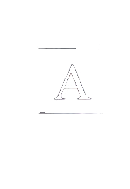
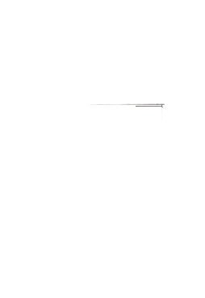
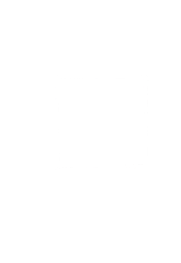
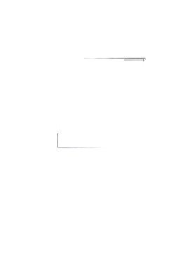
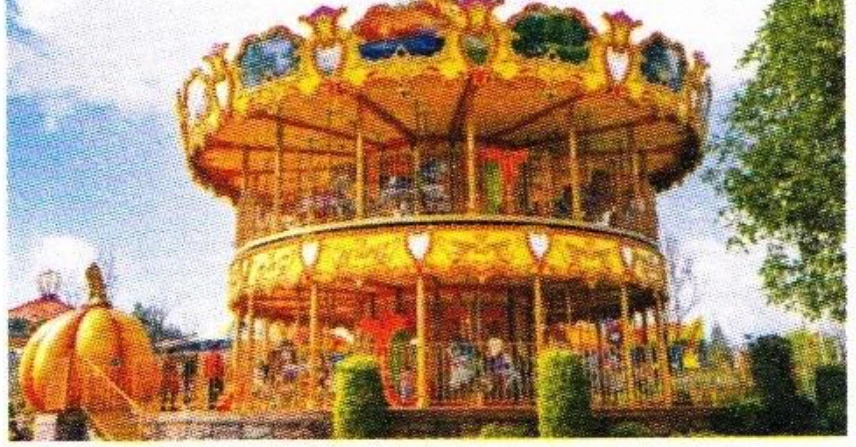
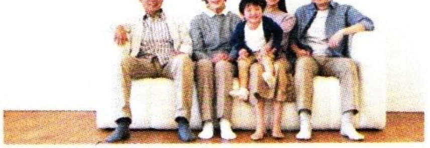

二
阅读ReadingЧтение
第一部分Part IЧасть I
第11—13题： 选择与句子最匹配的图片。Questions 11-13: Choose the correct picture for each sentence.Задания 11–13: Выберите картинку, которая лучше всего соответствует предложению.
A
B

C
D

Wǒ hěn xǐhuan zhè běn shū.例如： 我很喜欢这本书。
I like this book very much.Мне очень нравится эта книга.11
我家有五口人， 我们现在住在北京。
12
这里有好吃的， 还有好玩儿的。
13
117现在我会说一点儿汉语， 也会写一些汉字了。